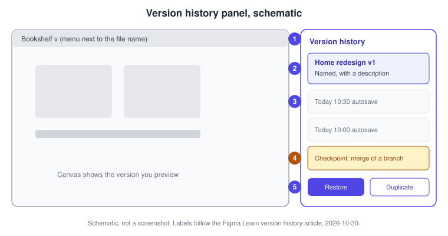
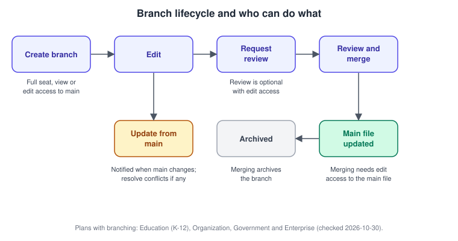
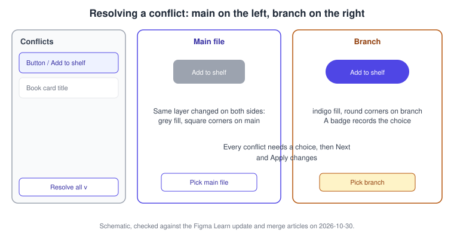
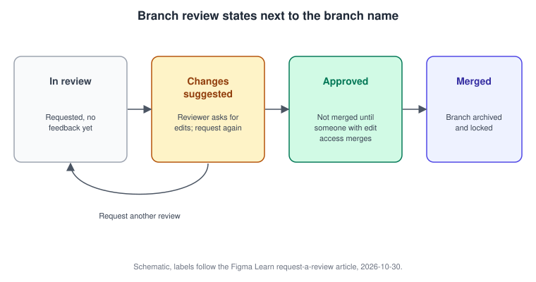
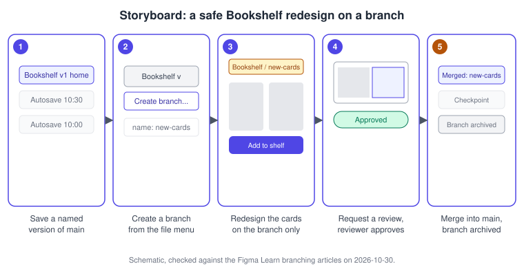

Version History and Branching
|
This content was generated with the assistance of AI and should be verified against the official documentation before being relied on in production. |
This page was written on 2026-10-30 against the UI3 interface of Figma Design. It covers two related safety nets: version history, which records and restores the states of one file, and branching, which lets you change a copy of a file and bring the result back into the main file after review. Version history is available on every plan, but how far back it reaches depends on the plan. Branching is available on the Education (K-12), Organization, Government and Enterprise plans, and creating a branch needs a Full seat plus view or edit access to the main file. Both are generally available according to the help articles consulted; no beta label appears on them. Tier names only are given here, see Plans, Seats and AI Credits for the current model.
The running example is Bookshelf, a small reading app. The goal of this page is to redesign the book card of the home screen without ever endangering the version that the team and the developers rely on. Related pages are Libraries and Publishing, Files, Folders, Teams and Sharing, Comments and Real-Time Collaboration and Usability Testing and Iteration, which uses branches between test rounds.
Two tools, two jobs
-
Version history answers "what did this file look like earlier, and can I go back?". It works inside one file and one timeline.
-
Branching answers "can I try a bigger change in parallel, have someone review it and then bring it back?". It creates a second file that remembers where it came from.
Use version history for undo-at-a-distance and for bookmarking milestones. Use a branch when the change is large, risky, shared with reviewers, or when other people keep editing main in the meantime. Where a plan has no branching, a duplicated file is the manual fallback, with the cost that nothing tracks or merges the differences.
Version history
Autosave checkpoints and named versions
Figma saves your work continuously. According to the version history article, it also adds a checkpoint every 30 minutes and after a lost connection or a crash. You can add your own named versions, which are checkpoints with a title and a description that you control.
In UI3 the version history is reached from the menu next to the file name; choose Show Version History and the list opens in the right sidebar. The help article was written for the earlier toolbar and does not describe UI3 specifically, so if a label has moved, look in the same file-name menu or search for it with the Actions menu (Command K on macOS, Control K on Windows). To save a named version, choose Save to Version History from that menu, or press Command Option S on macOS or Control Alt S on Windows. Add a title and a description, then click Save.
-
Titles longer than 25 characters are clipped, so put the key words first.
-
Keep descriptions under 140 characters if you want them readable at a glance. URLs can appear in a description but are not clickable.
-
An existing autosave can be named later: select the version in the list, then choose Name This Version from its options.
-
Creating, naming, deleting and restoring versions needs edit access to the file. To view a shared previous version, collaborators need "can edit" access.

-
Menu next to the file name: where Show Version History and Save to Version History live.
-
Named version: highlighted, with a title and a short description.
-
Autosave checkpoints: dated entries Figma adds on its own.
-
Merge checkpoint: Figma adds one in the main file before a branch is merged.
-
Restore and Duplicate: the two actions on a previewed version.
Restoring and duplicating
Select a version in the list to preview it on the canvas, then open its options.
-
Restore This Version makes the file look like that version again. The operation is non-destructive: Figma adds two autosave checkpoints, one for the state you left and one for the restored state, so you can go back again. Comments from all versions are kept, although comments you deleted are not brought back.
-
Duplicate creates a new file from that version. The recipients of the copy can select, edit, copy or export assets but cannot see the original file’s comments or version history.
If a heavy file will not load its history, the article describes restoring from the file browser by holding modifier keys while clicking the file; read the article for the exact keys before relying on it.
How far back, and what can be removed
-
Drafts and the Starter plan reach up to 30 days of history; paid plans reach the full history of existing files.
-
Checkpoints cannot be removed from the history. You can delete the information of a version you created or named (and of versions made when publishing to a library); it then shows as a plain autosave with a date and time, the contents stay unchanged and you can name it again. Deleting that information cannot be undone.
-
The article does not say whether version history applies to FigJam or Slides, so this page does not claim it. In Dev Mode, version history with descriptions is available for individual designs on the Education (K-12), Organization, Government and Enterprise plans with a Full or Dev seat, which helps developers compare against an earlier hand-off.
Branching
What a branch is
A branch is a copy of the main file in its state at that moment, linked to it. You edit the branch freely while the main file stays untouched. Branch URLs contain a /branch/ segment, anyone with access to the main file can open its branches, and inviting someone to a branch gives them access to the main file. The help article sets no limit on the number of branches.
Rules worth knowing before you start:
-
Creating a branch needs a Full seat and view or edit access to the main file. Viewers can only branch when "Allow viewers to copy, share, or export from the file" is on.
-
Libraries can be published only from the main file, so merge a branch before publishing its component or style changes. Publishing to the Community is also main-file only; to publish a branch, use Duplicate as new file.
-
Comments do not travel. Main-file comments are not shown in branches, comments do not count as changes, and branch comments are not carried into main when you merge.
-
Merging is all or nothing: you cannot pick individual changes to merge.

Source: Figma Learn: Guide to branching
The shape of the history
A gitGraph shows the idea: main keeps moving, the branch forks from one point, and the merge brings the branch back as a single step. This is an analogy for readers who know Git; Figma shows it as checkpoints in version history rather than commits.
Source: Figma Learn: Guide to branching (checkpoints are created when a branch is created, updated from main and merged)
Updating a branch from main
When someone changes main after you branched, Figma notifies you. Expand the menu next to the file or branch name and choose Update from main… to preview the updates, then Apply changes. The preview lists the changed items but only their latest versions, not before-and-after comparisons. You must take all updates; individual changes cannot be selected. You can also leave the updates alone and resolve conflicts when you merge. A memory-limit banner blocks reviewing and merging until you reduce memory use.
Conflicts
A conflict appears when the same thing was changed in both main and the branch. Click Resolve conflicts. Each conflict is shown side by side with the main file version on the left and the branch version on the right. Pick one version for each conflict; Figma adds a badge showing whether you chose main or the branch. The Resolve all menu offers Pick main file or Pick branch to apply one choice to every conflict. You must choose for every conflict, then click Next and Apply changes.

Review
Review is optional when you have edit access to the main file, and required when you do not. To request one, open the branch, expand the menu next to the file or branch name and choose Review and merge changes… to open the branch review modal. Select reviewers (Figma suggests people with "can edit" access to the main file), choose Request review, add an optional description and choose Send to reviewers. You need edit access to the branch and view access to the main file. Reviewers are notified in the app and by email, and a status appears by the branch name.
Reviewers see the changes grouped by page, can compare side by side or as an overlay, and can zoom and step through changes. They choose Add your review and then either Approve or Suggest changes, with optional comments. A review applies to the whole branch, so changes cannot be approved selectively. Approval does not merge the branch; merging needs edit access to the main file. Comments on the branch stay on the branch.

The review flow as a sequence:
Merging, archiving and recovery
Open the branch, choose Review and merge changes, resolve conflicts if prompted, review the changes (grouped by page, side by side by default or as an overlay) and click Merge. You can click Edit merge description to add a name and description, which you can also edit later in version history. Figma adds a checkpoint to the main file’s version history before the merge and keeps other changes made to main. Merging archives the branch; the Branches modal has Active, Archived and Yours tabs, and people with edit access to the main file can open, copy the link of, rename, merge or archive branches and restore archived ones.
A merge that goes wrong can be undone by restoring a previous version of the branch or the main file. The help article warns that restoring main applies to everyone and does not keep other changes made to main, including other branch merges, so coordinate merges when several people have branches open.
Bookshelf walkthrough

Source: Figma Learn: Guide to branching
Save a named version of main
-
Open the Bookshelf file and click an empty spot of the canvas to deselect layers.
-
Press Command Option S (macOS) or Control Alt S (Windows), or choose Save to Version History from the file-name menu.
-
Enter the title "Home v1 approved" and the description "Before card redesign", then click Save.
-
Open Show Version History and check the entry appears in the right sidebar.
Create a branch and redesign the card
-
With the main file open, expand the menu next to the file name in the left sidebar and choose Create branch….
-
Name it
new-cards. The left sidebar now shows the file and branch names. -
Redesign the book card on the branch: cover, title, author and an "Add to shelf" button.
-
Share the branch link with a teammate if you want early feedback; they will also get access to the main file.
Source: Figma Learn: Guide to branching
Bring in changes from main
-
If a teammate changed main meanwhile, accept the notification or choose Update from main… from the branch menu.
-
Review the list and click Apply changes.
-
If the button you restyled was also changed on main, click Resolve conflicts, pick main or branch for each conflict (or use Resolve all), then click Next and Apply changes.
Request a review and merge
-
Choose Review and merge changes… from the branch menu.
-
Add a reviewer, click Request review, write "New card layout, buttons unchanged" and click Send to reviewers.
-
The reviewer opens the request, compares side by side or as an overlay, and submits Approve or Suggest changes.
-
If changes were suggested, edit the branch and use Request another review.
-
Once approved, someone with edit access to the main file opens Review and merge changes and clicks Merge.
-
Check the main file’s version history for the merge checkpoint, and the Archived tab of the Branches modal for the finished branch.
Go back if something is wrong
-
Open version history on the affected file and preview the "Home v1 approved" version.
-
Choose Restore This Version. Two new autosave checkpoints are added, so the restore itself can be undone the same way.
-
If you only need the old design as a separate file, choose Duplicate instead.
Pitfalls
-
Treating autosaves as milestones: they are unnamed and, on Starter, age out after 30 days. Name the versions you care about.
-
Expecting comments to follow the branch into main. They do not.
-
Publishing library changes from a branch. Merge first.
-
Branching long-lived work without updating from main, which makes conflicts pile up at merge time.
-
Assuming approval merges. It does not.
-
Restoring main after a bad merge without telling the team: it affects everyone and drops other recent changes.
-
Planning around branching on a plan that lacks it, or for a person without a Full seat.
Where older guides are outdated
Older books and guides that cover collaboration describe the interface, seats and plans of their time. Three points to correct, checked on 2026-10-30. First, the seat model: "editor" and "viewer" seats, and "paid seats" wording, have been replaced by Full, Dev, Collab and View since 2025-03-11, and creating a branch needs a Full seat. Second, plan gating: branching is listed on the Education (K-12), Organization, Government and Enterprise plans, so any older statement tying it to a "Paid Team plan" or to every paid plan should be re-checked against the current plan pages. Third, the interface: UI3 has been the only interface since 2025-04-30 and its left navigation bar was redesigned again on 2026-01-07, so toolbar-based instructions from UI2 no longer match; where a label differs on screen, trust the screen and the current help article. Projects were also renamed folders on 2026-08-03.